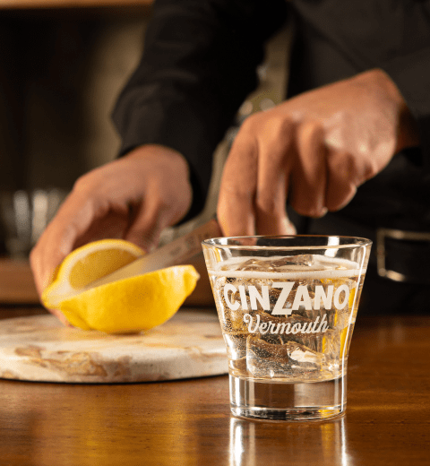
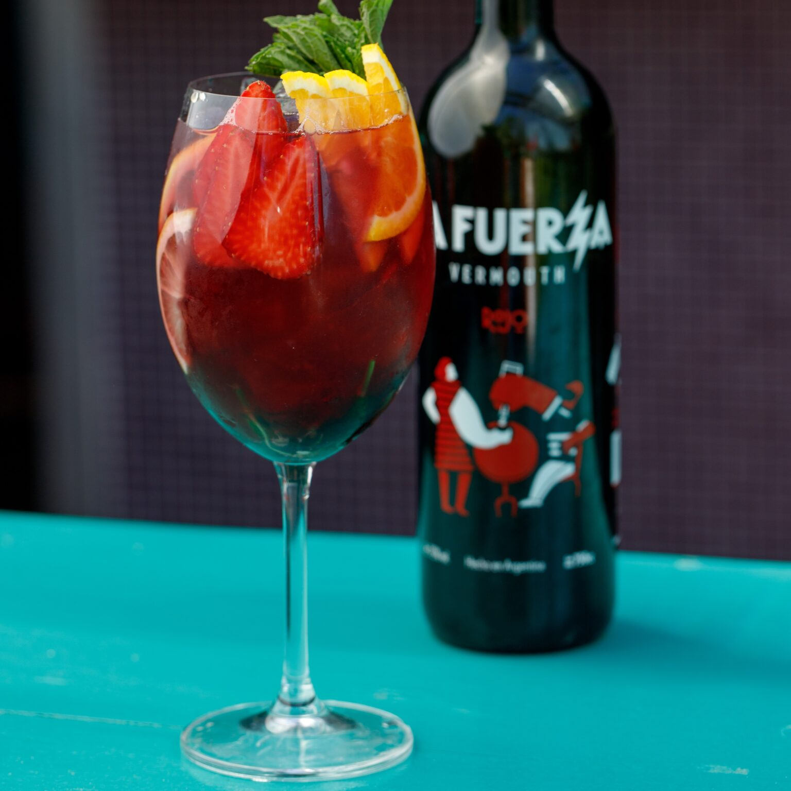
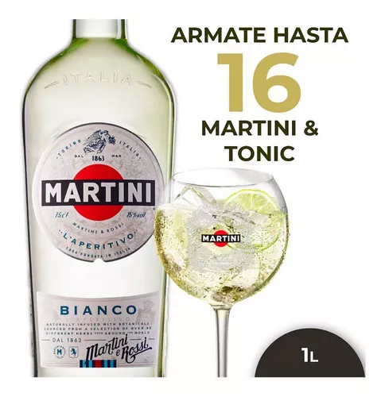

Vermut Blanco
El Vermut Blanco: una mezcla fresca de vino blanco y hierbas, equilibrada y refrescante. Ideal para coctelería elegante o disfrutar con hielo. Un toque de sofisticación en cada sorbo.
Vermut Rojo
El Vermut Rojo es una fusión cautivadora de vino tinto y una selección armoniosa de hierbas y especias. Su perfil robusto revela notas cálidas y ligeramente amargas, creando una experiencia de sabor única. Perfecto para cócteles clásicos o simplemente con hielo, el Vermut Rojo es la elección audaz para quienes buscan una bebida rica y llena de carácter.
Vermut Bianco
El Vermut Bianco es una deliciosa mezcla de vino blanco y hierbas aromáticas. Su sabor equilibrado presenta notas suaves y refrescantes, ideal para disfrutar solo o en cócteles. Una elección elegante y sofisticada.